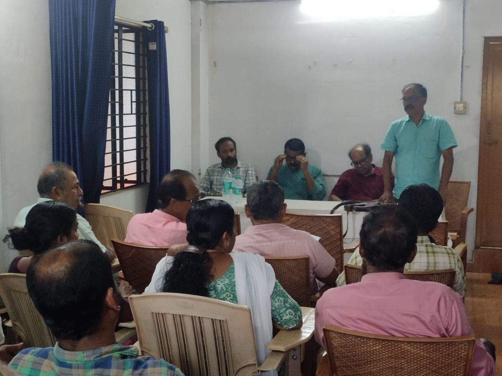
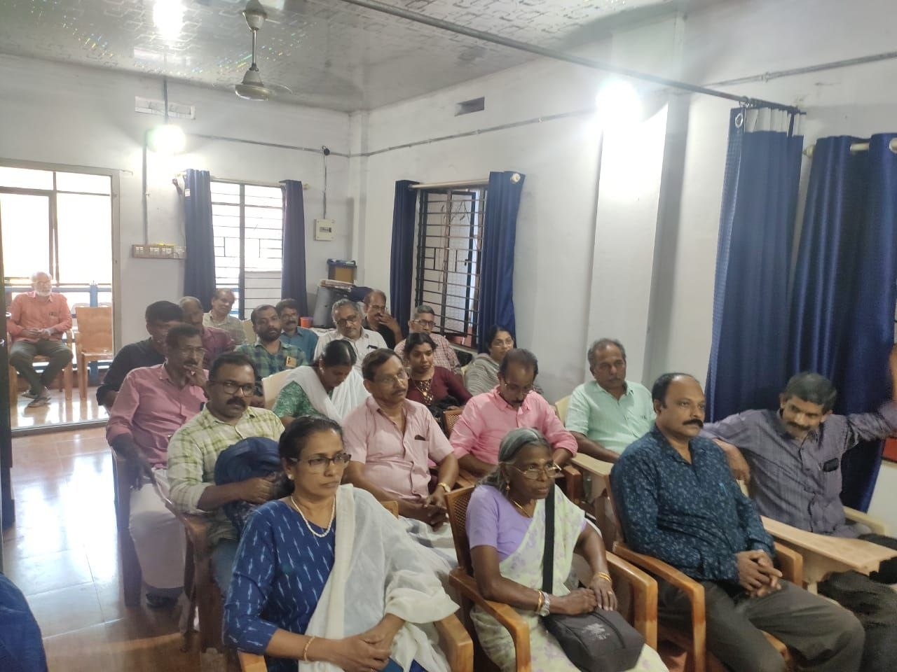
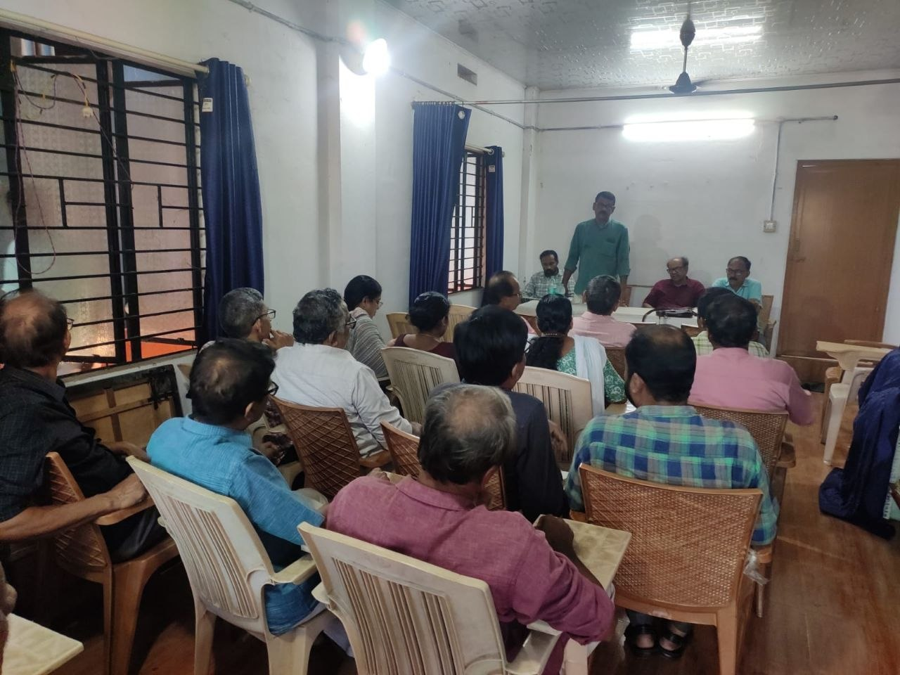
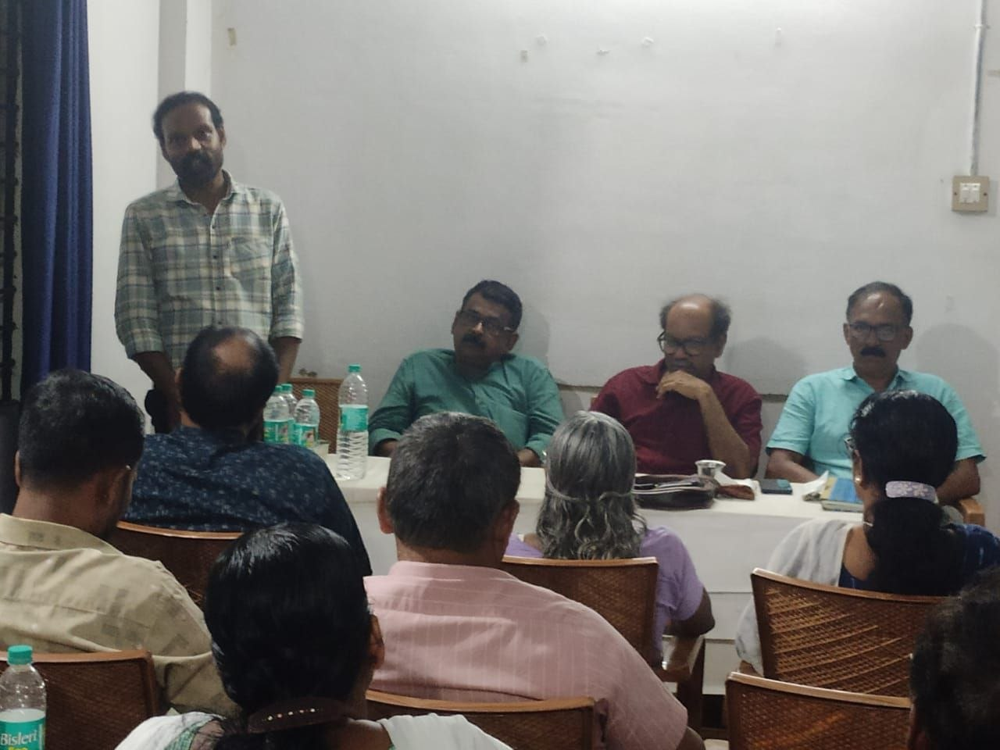
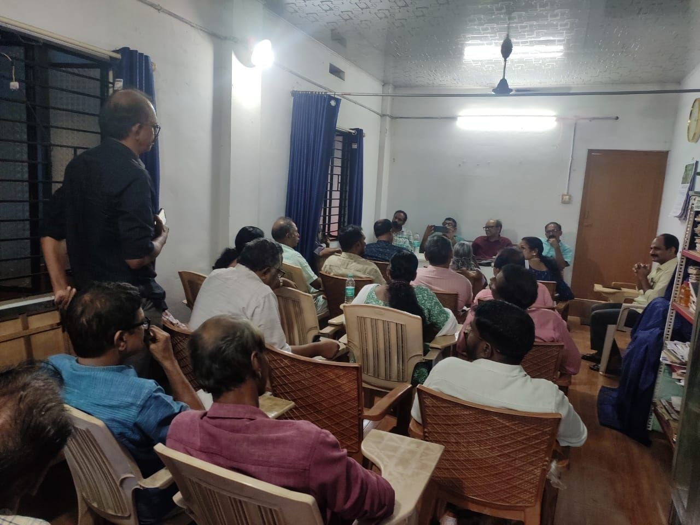
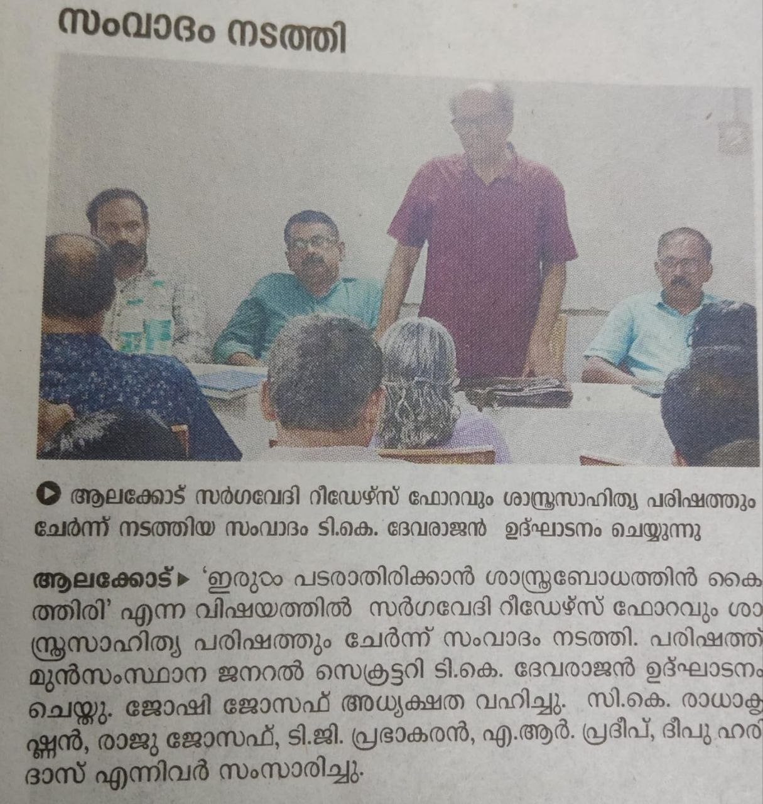
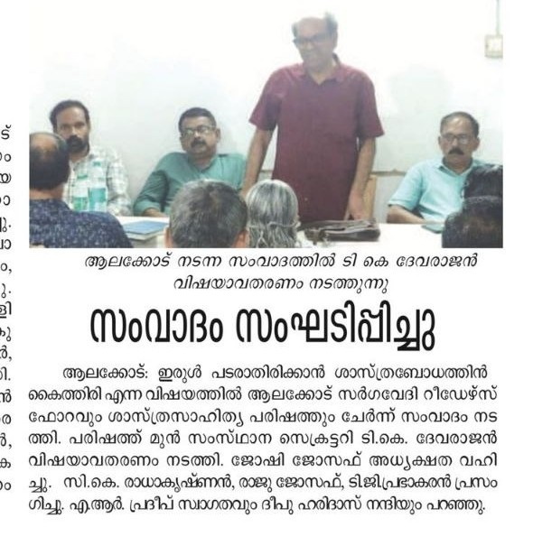

പ്രിയപ്പെട്ടവരേ,
നമസ്കാരം 🙏🙏🙏
ഫെബ്രുവരി 25 നു സർഗ്ഗവേദി, റീഡേഴ്സ് ഫോറം ശാസ്ത്ര സാഹിത്യ പരിഷത്തു മായി ചേർന്നു നടത്തിയ "ഇരുൾ പടരാതിരിക്കാൻ ശാസ്ത്രബോധത്തിന്റെ ഒരു കൈത്തിരി യെങ്കിലും കൊളുത്താൻ" എന്ന സംവാദം നിലവിലുള്ള സാഹചര്യത്തിൽ വളരെ പ്രാധാന്യം അർഹിക്കുന്നു. വിഷയം അവതരിപ്പിച്ച ശ്രീ ടി കെ ദേവരാജൻ സാർ യുക്തിസഹമായ വാക്കുകളാൽ ശാസ്ത്ര ബോധത്തിന്റെ ഒരു മിന്നൽ പിണർ തന്നെ നാം ഓരോരുത്തരിലും സൃഷ്ടിച്ചു എന്നാണ് എനിക്ക് തോന്നിയത്.
ഇന്ന് നാം അനുഭവിക്കുന്ന സ്വാതന്ത്ര്യവും മറ്റു സുഖസൗകര്യങ്ങളും ഒരു സുപ്രഭാതത്തിൽ പൊട്ടിമുളച്ചതല്ല, മാനവികതയിൽ ഊന്നി കൊണ്ട് ശാസ്ത്രബോധത്തിന്റെയും യുക്തിചിന്തയുടെയും പിൻബലത്തോടെ മനുഷ്യന്റെ നിരന്തര പരിശ്രമത്തിലൂടെ നേടിയെടുത്തതാണ്. (നവോത്ഥാനത്തിന്റെ പങ്ക് വിശദമാക്കി.) ശാസ്ത്ര സാങ്കേതിക വിദ്യകൾ അനുനിമിഷം പുരോഗമിക്കുന്ന ഈ കാലഘട്ടത്തിൽ കേരളം പോലെ വികസിതമായ, പ്രബുദ്ധരായ ജനങ്ങൾക്കിടയിൽ സംഭവിച്ചു കൊണ്ടിരിക്കുന്ന മൂല്യതകർച്ചയെ നേരിടുന്നതിന് വളരെ പ്രധാന പ്പെട്ട പ്രയോഗികമായ ഒരു നിർദ്ദേശം ആണ് അദ്ദേഹം മുന്നോട്ടു വച്ചത്. അതായത് ശാസ്ത്ര വിഷയങ്ങൾ സ്കൂൾ തലം മുതൽ നിലവിലുള്ള പഠനസമ്പ്രദായം മാറ്റി ഒരു ചിന്തനീയ വിഷയമാക്കി പഠിപ്പിക്കാൻ തുടങ്ങണമെന്നും അതു വഴി യുക്തിപൂർവ്വവും ശാസ്ത്രിയവുമായി കാര്യങ്ങൾ മനസ്സിലാക്കാൻ കഴിയുന്ന, അന്ധവിശ്വാസങ്ങൾക്ക് എതിരെ പോരാടാൻ സജ്ജമാകുന്ന മൂല്യബോധമുള്ള ഒരു തലമുറ യെ സൃഷ്ടിക്കാൻ കഴിയുമെന്നും അദ്ദേഹം പ്രസ്താവിച്ചു. ഇത് തന്നെയാണ് ഈ സംവാദത്തിന്റെ അന്തസ്സത്ത യായി ഞാൻ കരുതുന്നത്.
ഇത്തരം സംവാദങ്ങൾ പൊതു വേദികളിലോ നാലു ചുവരുകൾക്കുള്ളിലോ ഒതുങ്ങേണ്ട ചർച്ചകൾ മാത്രമായി അവസാനിക്കരുത്. ഇത് എങ്ങനെ പ്രാവർത്തികം ആക്കണം എന്ന് തീരുമാനിക്കുകയും അതിനുള്ള ശ്രമങ്ങൾ നടത്തേണ്ടതും നാമോരോരുത്തരുടെയും ഉത്തരവാദിത്തം ആണ്. പ്രത്യേകിച്ചും അധ്യാപക സമൂഹത്തിന്റെ പരിപൂർണ്ണ പിന്തുണ ഇവിടെ അത്യാവശ്യ മാണ്. അതു പോലെ നമ്മുടെ കുട്ടികളെ ഇത്തരം സംവാദങ്ങളിൽ പങ്കെടുപ്പിക്കുകയും അതുവഴി ആരോഗ്യപരമായ സാമൂഹിക ബന്ധങ്ങൾ കുട്ടികൾക്കിടയിൽ ഉണ്ടാക്കാനുള്ള അവസരമായി ഇത്തരം വേദികൾ ഉപയോഗപ്പെടുത്താൻ മുൻകൈ എടുക്കേണ്ടതും ഞാൻ ഉൾപ്പെടെയുള്ള രക്ഷിതാക്കളുടെ ചുമതലയാണ്.
സർഗ്ഗവേദിയും റീഡേഴ്സ് ഫോറവും നടത്തുന്ന ഇത്തരം പ്രവർത്തങ്ങളിൽ സജീവമായ പങ്കാളിത്തം ഉറപ്പു വരുത്തുന്നതിലൂടെ നുറുങ്ങു വെട്ടം ആകാൻ കഴിഞ്ഞില്ലെങ്കിലും സ്വയം ഇരുട്ടിൽ ആകാതിരിക്കാനും മറ്റുള്ളവരിലേക്ക് ഇരുട്ട് പടർത്താതിരിക്കാനും നമുക്ക് സാധിക്കുമെന്നത് ആശ്വാസകരവും ആശാ വഹവുമായ ഒരു വസ്തുത ആണ്. തുടർന്നുള്ള എല്ലാപ്രവർത്തങ്ങൾക്കും ആശംസകൾ.🙏🙏🙏
ഇന്നത്തെ സംവാദം നന്നായിരുന്നു. പത്തുമുപ്പത് പേർ പരിപാടിയിൽ പങ്കെടുത്തു. വിഷയം വളരെ വിപുലവും സമയം പരിമിതവും എന്ന പ്രശ്നം ഉണ്ടായിരുന്നു. പറഞ്ഞാലും പറഞ്ഞാലും തീരാത്ത വിഷയമാണ്. ആധുനിക മനുഷ്യൻ്റെ ആഫ്രിക്കയിൽ നിന്നുള്ള കുടിയേറ്റം മുതൽ നമ്മുക്ക് തുടങ്ങാൻ സാധിക്കും. അതിൻ്റെ ഒരു പരിമിതി ഉണ്ടാവും. കാരണം എത് പറയണം ഏത് പറയണ്ട എന്ന് ഈ വിഷയത്തിൽ തീരുമാനിക്കുക ബുദ്ധിമുട്ടാണ്. എങ്കിലും മാഷ് കുഴപ്പമില്ലാതെ ഏകദേശം എല്ലാ ഭാഗങ്ങളും തൊട്ടു പോയി.
തീർച്ചയായും ഇത്തരം ഒരു വിഷയം പൊതുവേദിയിൽ ചർച്ച ചെയ്യേണ്ടതു തന്നെയാണ്.
വിഷയം അവതരിപ്പിച്ചു സംസാരിച്ച ദേവരാജൻ സാറിന് തിരക്ക് ഉണ്ടായിരുന്നു എങ്കിലും കുറച്ചു സമയത്തിനുള്ളിൽ ഒരുപാട് കാര്യങ്ങൾ സംസാരിച്ചു. വളരെ നല്ല സംവാദം ആയിരുന്നു. പങ്കെടുത്തു സംസാരിച്ചവരെല്ലാം തന്നെ ഒരുപാട് അറിവുകൾ പങ്കുവെച്ചു. നമ്മുടെ ഓരോരുത്തരുടെയും ജീവിതത്തിൽ പടർന്നെക്കാവുന്ന അന്ധവിശ്വാസത്തിന്റെ ഇരുളുകൾ ശാസ്ത്ര ബോധത്തിന്റെ വെളിച്ചം കൊണ്ട് മായിക്കാൻ സാധിക്കട്ടെ 👍
സംവാദ വിഷയം അവതരിപ്പിച്ച ദേവരാജ ൻ മാസ്റ്റർ മുൻപ് ഉള്ള കേരളത്തേപ്പറ്റി യും അതിനു മാറ്റം കുറിച്ച നവോത്ഥാന നായകരേപ്പറ്റിയും, ഇന്നത്തെ വിശ്വാസത്തേപ്പറ്റിയും, അന്ധവിശ്വാസത്തേപ്പറ്റിയും വിശദമായിതന്നെ സംസാരിച്ചു എന്നാണ് ഏന്റെ അഭിപ്രായം. ചർച്ചയിൽ പങ്കെടുത്തവർ വിഷയത്തേപ്പറ്റിയുള്ള അവരുടെ കാഴ്പപ്പാടുകളും നിർദേശങ്ങളും വളരെ ഗംഭീരമായിത്തന്നെ അവതരിപ്പിച്ചു. ഇന്നത്തെ പരിപാടിയിൽ പങ്കെടുക്കാൻ സാധിച്ച തിൽ ഞാൻ വളരെയേറെ സന്തോഷിക്കുന്നു.

